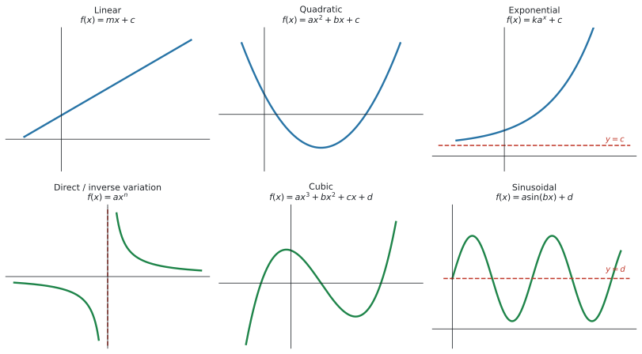
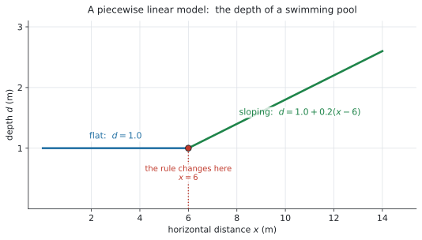
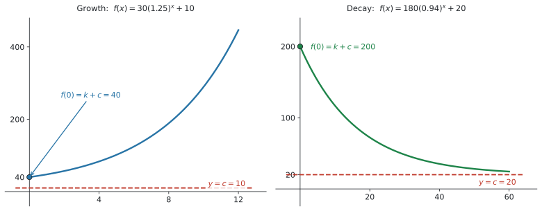
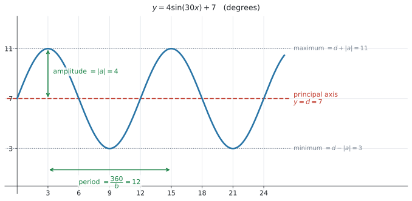

SL 2.5 — Modelling with functions（モデルに使う関数）
- モデルに使う 6つの関数の形を、英語の名前と式で言える。
- linear model のパラメーターを、文脈の言葉で説明できる（piecewise linear を含む）。
- quadratic model の vertex・zeros・intercepts を求められる。
- exponential model の \(k\)、\(a\)、\(c\) の意味が分かり、horizontal asymptote を書ける。
- direct / inverse variation の \(a\) を、点を代入して求められる。
- sinusoidal model の amplitude・period・principal axis を求められる。
公式集の SL 2.5 の欄にあるのは、これだけです。
\[ f(x) = ax^{2} + bx + c \ \Rightarrow \ \text{axis of symmetry is } x = -\frac{b}{2a} \]
amplitude・period・principal axis は、公式集にありません。 シラバスの Guidance 欄に書かれているだけなので、この3つは覚える必要があります。
\[ \text{amplitude} = |a|, \qquad \text{period} = \frac{360}{b}, \qquad \text{principal axis: } y = d \]
シラバスは、SL 2.5 のことを theoretical models（理論上のモデル）と呼んでいます。
どのモデルを選ぶか・データにどう当てはめるかは、次の SL 2.6 の話です。この項目では、6つの形を1つずつ知ることに集中します。
The idea
現実の場面を式で表したものが model（モデル）です。AI SL では、使ってよい形が6つに決まっています。
1. 6つの形

| English | 式 | 現実のどんな場面か |
|---|---|---|
| linear model | \(f(x) = mx + c\) | 一定の割合で増える・減る |
| quadratic model | \(f(x) = ax^{2} + bx + c\)（\(a \neq 0\)） | 上がって下がる（ボール・利益・橋） |
| exponential model | \(f(x) = ka^{x} + c\) | 倍々に増える・半分ずつ減る |
| direct / inverse variation | \(f(x) = ax^{n}\)（\(n\) は整数） | 比例・反比例 |
| cubic model | \(f(x) = ax^{3} + bx^{2} + cx + d\) | 上下に2回曲がる（箱の体積など） |
| sinusoidal model | \(f(x) = a\sin(bx) + d\) | くり返す（潮・観覧車・気温） |
2. linear model
\[ f(x) = mx + c \tag{1}\]
SL 2.1 でやった直線の式です。文脈のある問題では、\(m\) と \(c\) に必ず現実の意味があります。
| 記号 | 何を表すか | 例（携帯電話の料金） |
|---|---|---|
| \(m\) | \(1\) 増えるごとの変化 | \(1\) 分あたりの通話料 |
| \(c\) | はじめの値（\(x = 0\) のとき） | 毎月の基本料金 |
piecewise linear model
シラバスが名指しで挙げている形です。
Including piecewise linear models, for example horizontal distances of an object to a wall, depth of a swimming pool, mobile phone charges.
途中で傾きが変わるモデルです。図 2 はプールの深さです。

\[ d(x) = \begin{cases} 1.0 & 0 \leq x \leq 6 \\ 1.0 + 0.2(x - 6) & 6 < x \leq 14 \end{cases} \]
\(x = 10\) なら \(6\) より大きいので、下の式です。
\[ d(10) = 1.0 + 0.2(10 - 6) = 1.0 + 0.8 = 1.8 \]
上の式にそのまま入れてしまうのが、この形での一番多い誤りです。計算より先に、どちらの区間かを確かめてください。
3. quadratic model
\[ f(x) = ax^{2} + bx + c, \qquad a \neq 0 \tag{2}\]
シラバスが「求められるようにしておくもの」として挙げているのは、この4つです。
Axis of symmetry, vertex, zeros and roots, intercepts on the \(x\)-axis and \(y\)-axis.
どれも SL 2.4 でやったものです。 ここでは、それを文脈のある問題で使います。
| \(a\) の符号 | グラフの形 | 現実の場面 |
|---|---|---|
| \(a > 0\) | 谷（下に凸） | 費用の最小、ケーブルのたるみ |
| \(a < 0\) | 山（上に凸） | ボールの高さ、利益の最大、噴水 |
シラバスの Guidance 欄に Technology can be used to find roots とあります。因数分解や解の公式で解く必要はありません。
4. exponential model
シラバスに、3つの形が並んでいます。
\[ \begin{aligned} f(x) &= ka^{x} + c \\[2pt] f(x) &= ka^{-x} + c \quad (a > 0) \\[2pt] f(x) &= k\mathrm{e}^{rx} + c \end{aligned} \tag{3}\]

growth か decay かは、\(a\) で決まります
| 形 | 条件 | 動き |
|---|---|---|
| \(ka^{x} + c\) | \(a > 1\) | growth（増える） |
| \(ka^{x} + c\) | \(0 < a < 1\) | decay（減る） |
| \(ka^{-x} + c\) | \(a > 1\) | decay（\(a^{-x} = \left(\frac{1}{a}\right)^{x}\) なので） |
| \(k\mathrm{e}^{rx} + c\) | \(r > 0\) で growth、\(r < 0\) で decay |
\(c\) は horizontal asymptote です
\(x\) を大きくすると \(ka^{x}\) の部分が \(0\) に近づく（decay の場合）ので、残るのは \(c\) です。
\[ y = c \]
SL 2.4 でやった horizontal asymptote が、そのまま出てきます。
ここが、この項目で一番落とすところです。
\[ f(0) = ka^{0} + c = k(1) + c = k + c \]
\(a^{0} = 1\) なので、\(k\) がそのまま残り、そこに \(c\) が足されます。
図 3 の右の例では \(180 + 20 = 200\) が「はじめの温度」です。\(180\) ではありません。
シラバスの Guidance 欄に、こう書かれています。
Link to: compound interest (SL 1.4), geometric sequences and series (SL 1.3) and amortization (SL 1.7).
SL 1.3 で書いた \(u_n = u_1 r^{n-1}\) は、\(r\) が \(a\) の役をしている exponential modelです。同じものを、別の書き方で見ています。
5. direct / inverse variation
\[ f(x) = ax^{n}, \qquad n \in \mathbb{Z} \tag{4}\]
\(n\) が整数（\(\mathbb{Z}\) は整数全体）であればよい、という形です。
| \(n\) | 呼び方 | 例 |
|---|---|---|
| \(n > 0\) | direct variation（比例） | \(y = 4.9x^{2}\)（落下距離） |
| \(n < 0\) | inverse variation（反比例） | \(y = \dfrac{120}{x} = 120x^{-1}\)（人数と時間） |
シラバスに、こう書かれています。
The \(y\)-axis as a vertical asymptote when \(n < 0\).
\(n < 0\) だと \(x = 0\) で計算できなくなるので、\(y\) 軸が vertical asymptote になります。
\(a\) は、点を1つ代入すれば出ます
\(y = ax^{n}\) の \(n\) が分かっていれば、分かっている点を1つ入れるだけです。
\(n = -1\) で、\(x = 3\) のとき \(y = 40\) なら
\[ 40 = \frac{a}{3} \ \Rightarrow \ a = 120 \]
6. cubic model
\[ f(x) = ax^{3} + bx^{2} + cx + d \tag{5}\]
上下に2回曲がることができる形です（図 1 の下段中央）。
シラバスの Connections 欄が挙げている場面は、箱の体積、テニスボールの缶のすき間、風力発電の出力です。
この形について、AI SL で手計算で求めることはありません。 電卓に入れて、Analyze Graph で最大・最小や zeros を読みます。
7. sinusoidal model
\[ f(x) = a\sin(bx) + d, \qquad f(x) = a\cos(bx) + d \tag{6}\]
くり返す（周期的な）場面に使います。潮の満ち引き、観覧車、1年の気温です。

シラバスの Guidance 欄が、聞かれることを3つに限定しています。
… will only be required to predict or find amplitude (\(|a|\)), period (\(\frac{360}{b}\)), or equation of the principal axis (\(y = d\)).
| English | 求め方 | 図 4 では |
|---|---|---|
| amplitude（振幅） | \(\lvert a \rvert\) | \(4\) |
| period（周期） | \(\dfrac{360}{b}\) | \(\dfrac{360}{30} = 12\) |
| principal axis（中心線） | \(y = d\) | \(y = 7\) |
\(b\) は「くり返しの速さ」です
\(b\) そのものは period ではありません。 ここを取り違える人が、とても多いところです。
\(b\) が表しているのは、どれだけ速くくり返すかです。\(b\) が大きいほど波は横につまり、\(b\) が小さいほど横に伸びます。
図 4 では \(b = 30\) なので、
\[ \text{period} = \frac{360}{30} = 12 \]
\(12\) ごとに同じ形がもどってきます。 \(12\) か月で \(1\) 年、というモデルです。
\[ \text{period} = \frac{360}{b} \]
この式は必ず覚えてください。 公式集には載っていません。
\(\sin\) と \(\cos\) は横にずれているだけで、くり返しの速さは同じです。ですから、どちらで書かれていても period の求め方は変わりません。
Find the period と聞かれて \(b\) の値をそのまま書いてしまうのが、この項目で多い失点です。答えるのは \(\dfrac{360}{b}\) のほうです。
この3つから、最大・最小も出せます。
\[ \text{maximum} = d + |a|, \qquad \text{minimum} = d - |a| \tag{7}\]
公式集に載っていないのは、この項目ではこの3つ（\(|a|\)、\(\dfrac{360}{b}\)、\(y = d\)）です。ここだけは覚えてください。
\(\dfrac{360}{b}\) の \(360\) は degree（度）の \(360\) です。radian は SL では要りません（SL 3.4 に Radians are not required at SL と書かれています）。電卓は Degree にしておいてください。
シラバスに、はっきり書かれています。
Students will not be expected to translate between \(\sin x\) and \(\cos x\).
\(\sin\) と \(\cos\) のどちらで書かれていても、amplitude・period・principal axis の求め方は同じです。
Why it works
ここでは period がなぜ \(\dfrac{360}{b}\) なのかだけを説明します。
\(\sin\) は、中身の角が \(0^\circ\) から \(360^\circ\) まで進むと、ちょうど1周してもとに戻ります。
\(f(x) = \sin(30x)\) の中身は \(30x\) です。ですから、中身が \(360\) になるのは
\[ 30x = 360 \ \Rightarrow \ x = 12 \]
のときです。\(x\) が \(12\) 進むあいだに、中身は \(1\) 周ぶん進みます。これが period です。
\(b\) が大きいほど中身が速く進むので、period は短くなります。 \(\dfrac{360}{b}\) の \(b\) が分母にあるのは、そのためです。
Worked examples
問題文は英語です。意味が理解できなかったら、問題文の下の「日本語訳」を開いてください。解説は日本語です。
例題 1 A mobile phone plan charges a fixed monthly fee plus a fixed amount for each minute of calls. A customer who uses 100 minutes pays 28 dollars. A customer who uses 250 minutes pays 46 dollars.
The monthly cost, \(C\) dollars, for \(t\) minutes of calls is modelled by \(C(t) = mt + c\).
(a) Find the value of \(m\) and the value of \(c\).
(b) Interpret the value of \(m\) in the context of the question.
(c) Find the cost of a month in which 400 minutes of calls are made.
日本語訳
ある携帯電話のプランは、毎月の固定料金に加えて、通話1分ごとに決まった額がかかります。\(100\) 分使った人は \(28\) ドル、\(250\) 分使った人は \(46\) ドル払いました。
\(t\) 分通話したときの月額 \(C\) ドルが、\(C(t) = mt + c\) でモデル化されています。
(a) \(m\) と \(c\) の値を求めなさい。
(b) \(m\) の値を、この問題の文脈で解釈しなさい。
(c) \(400\) 分通話した月の料金を求めなさい。
(a) 点が2つ分かっています。\((100,\ 28)\) と \((250,\ 46)\) です。SL 2.1 の gradient の式が使えます。
\[ m = \frac{46 - 28}{250 - 100} = \frac{18}{150} = 0.12 \]
\(c\) は、どちらかの点を入れれば出ます。
\[ 28 = 0.12(100) + c \ \Rightarrow \ 28 = 12 + c \ \Rightarrow \ c = 16 \]
検算。 \(0.12(250) + 16 = 30 + 16 = 46\) ✓
(b) \(m\) は「\(1\) 増えるごとの変化」でした。ここでの \(1\) は \(1\) 分です。
試験ではこう書く
Each extra minute of calls costs 0.12 dollars, so the plan charges 12 cents per minute.
（通話 \(1\) 分ごとに \(0.12\) ドルかかる、という意味です。）
(c) \(t = 400\) を入れます。
\[ C(400) = 0.12(400) + 16 = 48 + 16 = 64 \]
(a) \(m = \dfrac{46 - 28}{250 - 100} = 0.12\) and \(28 = 0.12(100) + c\), so \(c = 16\)
(b) Each extra minute of calls costs 0.12 dollars, so the plan charges 12 cents per minute.
(c) \(C(400) = 0.12(400) + 16 = 64\) dollars
例題 2 The depth of a swimming pool, \(d\) metres, at a horizontal distance \(x\) metres from the shallow end is modelled by
\[ d(x) = \begin{cases} 1.0 & 0 \leq x \leq 6 \\ 1.0 + 0.2(x - 6) & 6 < x \leq 14 \end{cases} \]
(a) Find the depth of the pool at \(x = 4\).
(b) Find the depth of the pool at \(x = 10\).
(c) Find the depth at the deep end of the pool.
(d) Find the horizontal distance at which the depth is 2.0 metres.
日本語訳
プールの浅い端から水平に \(x\) メートルの位置での深さ \(d\) メートルが、次のようにモデル化されています。
\[ d(x) = \begin{cases} 1.0 & 0 \leq x \leq 6 \\ 1.0 + 0.2(x - 6) & 6 < x \leq 14 \end{cases} \]
(a) \(x = 4\) でのプールの深さを求めなさい。
(b) \(x = 10\) でのプールの深さを求めなさい。
(c) プールの深い端での深さを求めなさい。
(d) 深さが \(2.0\) メートルになる水平距離を求めなさい。
(a) まず、どちらの区間かを決めます。\(4\) は \(0 \leq x \leq 6\) に入るので、上の式です。
\[ d(4) = 1.0 \]
上の式には \(x\) が入っていません。 ここは平らな部分なので、どこでも \(1.0\) m です。
(b) \(10\) は \(6\) より大きいので、下の式です。
\[ d(10) = 1.0 + 0.2(10 - 6) = 1.0 + 0.8 = 1.8 \]
(c) 「deep end（深い端）」は \(x\) が一番大きいところ、つまり \(x = 14\) です。
\[ d(14) = 1.0 + 0.2(14 - 6) = 1.0 + 1.6 = 2.6 \]
(d) \(2.0\) は \(1.0\) より深いので、下の式のほうで起きています。
\[ 1.0 + 0.2(x - 6) = 2.0 \ \Rightarrow \ 0.2(x - 6) = 1.0 \ \Rightarrow \ x - 6 = 5 \ \Rightarrow \ x = 11 \]
検算。 \(1.0 + 0.2(11 - 6) = 1.0 + 1.0 = 2.0\) ✓
(a) \(d(4) = 1.0\) m
(b) \(d(10) = 1.0 + 0.2(10 - 6) = 1.8\) m
(c) \(d(14) = 1.0 + 0.2(14 - 6) = 2.6\) m
(d) \(1.0 + 0.2(x - 6) = 2.0 \Rightarrow x - 6 = 5 \Rightarrow x = 11\) m
例題 3 Water from a fountain follows a curved path. Its height above the ground, \(h\) metres, at a horizontal distance \(x\) metres from the nozzle is modelled by
\[ h(x) = -0.5x^{2} + 3x \]
(a) Find the horizontal distance at which the water lands on the ground.
(b) Find the maximum height of the water and the distance at which it occurs.
(c) Find the height of the water at a horizontal distance of 1 metre.
(d) State a reasonable domain for this model.
日本語訳
噴水の水が曲線を描いて飛びます。ノズルから水平に \(x\) メートルの位置での地面からの高さ \(h\) メートルが
\[ h(x) = -0.5x^{2} + 3x \]
でモデル化されています。
(a) 水が地面に落ちる水平距離を求めなさい。
(b) 水の最高の高さと、そのときの距離を求めなさい。
(c) 水平距離 \(1\) メートルでの水の高さを求めなさい。
(d) このモデルの妥当な定義域を述べなさい。
(a) 「地面に落ちる」は \(h = 0\)、つまり zeros です。
menu → 6: Analyze Graph → 1: Zero\(x = 0\) と \(x = 6\) が出ます。\(x = 0\) はノズルの位置（まだ飛び出す前）なので、落ちるのは
\[ x = 6 \]
のほうです。2つ出たら、どちらが聞かれているのかを文脈で決めます。
(b) \(a = -0.5\) で負なので、山になります。
menu → 6: Analyze Graph → 3: Maximum\((3,\ 4.5)\) が出ます。聞かれているのは高さと距離の2つなので、両方を言葉で書きます。
検算。 公式集の \(x = -\dfrac{b}{2a} = -\dfrac{3}{2(-0.5)} = 3\) ✓、\(h(3) = -4.5 + 9 = 4.5\) ✓
(c) \(x = 1\) を入れるだけです。
\[ h(1) = -0.5 + 3 = 2.5 \]
(d) ノズルから出て、地面に落ちるまでです。
\[ 0 \leq x \leq 6 \]
これより外は、水が飛んでいないところなので意味がありません。
(a) \(h(x) = 0\) gives \(x = 0\) and \(x = 6\). The water lands at \(x = 6\) m.
(b) The maximum height is 4.5 m, at a horizontal distance of 3 m.
(c) \(h(1) = -0.5 + 3 = 2.5\) m
(d) \(0 \leq x \leq 6\)
例題 4 An oven is switched off. Its temperature, in degrees Celsius, \(t\) minutes later is modelled by
\[ T(t) = 180(0.94)^{t} + 20, \qquad t \geq 0 \]
(a) Write down the temperature of the oven at the moment it is switched off.
(b) Write down the equation of the horizontal asymptote of the graph of \(T\).
(c) Find the temperature of the oven after 30 minutes, correct to three significant figures.
(d) Find the time taken for the oven to cool to 50 degrees Celsius, correct to three significant figures.
日本語訳
オーブンのスイッチを切ります。その \(t\) 分後の温度（摂氏）が
\[ T(t) = 180(0.94)^{t} + 20, \qquad t \geq 0 \]
でモデル化されています。
(a) スイッチを切った瞬間のオーブンの温度を書きなさい。
(b) \(T\) のグラフの水平漸近線の式を書きなさい。
(c) \(30\) 分後のオーブンの温度を、有効数字3桁で求めなさい。
(d) オーブンが摂氏 \(50\) 度まで冷めるのにかかる時間を、有効数字3桁で求めなさい。
(a) \(t = 0\) を入れます。ここが一番の落としどころです。
\[ T(0) = 180(0.94)^{0} + 20 = 180(1) + 20 = 200 \]
\(0.94^{0} = 1\) なので、答えは \(k + c\)、つまり \(200\) 度です。\(180\) ではありません。
(b) \(0.94 < 1\) なので decay です。\(t\) が大きくなると \(180(0.94)^{t}\) は \(0\) に近づき、残るのは \(20\) です。
\[ T = 20 \]
縦軸の文字に合わせて \(T = 20\) と書きます。 これは部屋の温度です。
(c) \(t = 30\) を電卓に入れます（GDCの使い方）。
\[ T(30) = 180(0.94)^{30} + 20 = 48.126\ldots \]
有効数字3桁で \(48.1\) 度です。
(d) \(T = 50\) になる \(t\) です。横一直線をかいて交点を読みます。
f1(x) = 180(0.94)^x + 20
f2(x) = 50
menu → 6: Analyze Graph → 4: Intersection\(t = 28.957\ldots\) なので、有効数字3桁で \(29.0\) 分です。
\(29\) ではなく \(29.0\) と書いてください。有効数字3桁を求められています。
(a) \(T(0) = 180 + 20 = 200\) degrees
(b) \(T = 20\)
(c) \(T(30) = 48.126\ldots = 48.1\) degrees (3 s.f.)
(d) \(180(0.94)^{t} + 20 = 50\), so \(t = 28.95\ldots = 29.0\) minutes (3 s.f.)
例題 5 The time taken to fill a tank, \(T\) minutes, varies inversely with the number of taps used, \(n\). The model is \(T = an^{-1}\), for \(n \geq 1\).
When 3 taps are used, the tank takes 40 minutes to fill.
(a) Find the value of \(a\).
(b) Find the time taken to fill the tank when 8 taps are used.
(c) Write down the equation of the vertical asymptote of the graph of \(T\) against \(n\).
(d) Explain why this asymptote has no meaning in the context of the question.
日本語訳
タンクを満たすのにかかる時間 \(T\) 分は、使う蛇口の数 \(n\) に反比例します。モデルは \(n \geq 1\) に対して \(T = an^{-1}\) です。
蛇口を \(3\) つ使うと、タンクは \(40\) 分で満たされます。
(a) \(a\) の値を求めなさい。
(b) 蛇口を \(8\) つ使ったときにかかる時間を求めなさい。
(c) \(n\) に対する \(T\) のグラフの垂直漸近線の式を書きなさい。
(d) この漸近線が、この問題の文脈で意味を持たない理由を説明しなさい。
(a) 点を1つ代入します。\(n = 3\) のとき \(T = 40\) です。
\[ 40 = \frac{a}{3} \ \Rightarrow \ a = 120 \]
\(n^{-1} = \dfrac{1}{n}\) であることに注意してください。
(b) モデルは \(T = \dfrac{120}{n}\) と分かったので、\(n = 8\) を入れます。
\[ T = \frac{120}{8} = 15 \]
\(15\) 分です。蛇口が増えると時間が減るという、反比例の動きが出ています。
(c) \(n = 0\) で \(\dfrac{120}{0}\) が計算できません。
\[ n = 0 \]
シラバスの言う「\(n < 0\) のとき \(y\) 軸が vertical asymptote になる」が、そのまま出ています。
(d) \(n\) は蛇口の数です。\(0\) 本ではタンクは満たせません。
試験ではこう書く
The asymptote is at \(n = 0\), but \(n\) is the number of taps. With no taps the tank would never fill, so \(n = 0\) has no meaning here.
（漸近線は \(n = 0\) だが、\(n\) は蛇口の数である。蛇口が \(0\) 本ならタンクは満たされないので、\(n = 0\) はここでは意味を持たない、という意味です。）
(a) \(40 = \dfrac{a}{3}\), so \(a = 120\)
(b) \(T = \dfrac{120}{8} = 15\) minutes
(c) \(n = 0\)
(d) The asymptote is at \(n = 0\), but \(n\) is the number of taps. With no taps the tank would never fill, so \(n = 0\) has no meaning here.
例題 6 The depth of water in a harbour, \(d\) metres, \(t\) hours after midnight is modelled by
\[ d(t) = 4\sin(30t) + 7 \]
(a) Write down the amplitude.
(b) Find the period, and interpret it in the context of the question.
(c) Write down the equation of the principal axis.
(d) Find the maximum depth and the time at which it first occurs.
日本語訳
港の水深 \(d\) メートルが、真夜中から \(t\) 時間後に
\[ d(t) = 4\sin(30t) + 7 \]
でモデル化されています。
(a) 振幅を書きなさい。
(b) 周期を求め、この問題の文脈で解釈しなさい。
(c) 中心線の式を書きなさい。
(d) 最大の水深と、それが最初に起こる時刻を求めなさい。
(a) amplitude は \(|a|\) です。\(\sin\) の前の数を見ます。
\[ \text{amplitude} = 4 \]
(b) \(\sin\) の中身の \(t\) の係数が \(b\) です。ここでは \(b = 30\)。
\[ \text{period} = \frac{360}{30} = 12 \]
単位は \(t\) の単位、つまり時間です。
試験ではこう書く
The pattern of the tide repeats every 12 hours, so there are two high tides each day.
（潮の動きが \(12\) 時間ごとにくり返す、つまり \(1\) 日に \(2\) 回満潮がある、という意味です。）
(c) \(\sin\) のあとに足されている数が \(d\) です。
\[ d = 7 \]
これが、水深が上下する真ん中の高さです。
(d) 最大は \(d + |a|\) です。
\[ 7 + 4 = 11 \]
そのときの時刻は、\(\sin\) の中身が \(90^\circ\) になるところです。
\[ 30t = 90 \ \Rightarrow \ t = 3 \]
\(t = 3\)、つまり午前3時です。電卓で Analyze Graph → Maximum を使っても同じ答えになります。
検算。 \(d(3) = 4\sin(90^\circ) + 7 = 4(1) + 7 = 11\) ✓
(a) \(4\)
(b) Period \(= \dfrac{360}{30} = 12\) hours. The pattern of the tide repeats every 12 hours, so there are two high tides each day.
(c) \(d = 7\)
(d) Maximum depth \(= 7 + 4 = 11\) m, when \(30t = 90\), so \(t = 3\) (3 am).
Common errors
\(f(x) = ka^{x} + c\) で \(x = 0\) を入れると、\(a^{0} = 1\) なので
\[ f(0) = k + c \]
です。\(c\) を足し忘れるのが、この項目で一番多い誤りです。
\(x\) がどちらの式に入るのかを、計算より先に決めてください。
境目の値（上の例なら \(x = 6\)）がどちらの区間に入っているかを、不等号の向き（\(\leq\) か \(<\) か）で確かめます。
\(b\) は分母です。
\[ \text{period} = \frac{360}{b} \]
\(b\) が大きいほど波が速くなる（period が短くなる）ので、\(b\) は下、と覚えてください。
amplitude は \(|a|\)、つまり中心からの高さです。
図 4 では amplitude は \(4\)、最大値は \(11\) です。別のものです。
\(\dfrac{360}{b}\) は degree の式です。電卓が Radian になっていると、まったく違う答えが出ます。
AI SL では、Topic 3 も含めて degree が中心です。試験の前に Degree にしておいてください。
噴水やボールの問題では、\(x = 0\) と \(x = 6\) の両方が出て、片方だけが答えということがよくあります。
「その数が現実の何を表すか」を考えてから、どちらかを選んでください。
\[ n^{-1} = \frac{1}{n} \]
マイナスの指数は逆数です。符号を変えるのではありません（SL 1.5）。
State a reasonable domain は、現実に意味のある範囲を聞いています。
噴水なら \(0 \leq x \leq 6\)、蛇口なら \(n \geq 1\) です。式が計算できる範囲ではありません。
Using your GDC (TI-Nspire CX II)
1. 角の設定を Degree にする
sinusoidal model を扱う前に、必ず確かめてください。
ctrl + doc → Document Settings → Angle: DegreePress-to-Test で始めた直後は Degree になっています。AI SL では、そのままで構いません。
2. モデルをグラフにする
ctrl + doc → 2: Add Graphs
f1(x) = 180(0.94)^x + 20
menu → Window/Zoom → Zoom - Fit\(0.94^{x}\) は 0.94^x と入力します。^ は キーボードの ^ キーです。
3. モデルから値を読む
| 聞かれること | やること |
|---|---|
| \(x\) を入れて \(y\) を出す | 式に代入するか、表（ctrl + T）で読む |
| \(y\) を入れて \(x\) を出す | f2(x) = その値 をかいて Intersection |
| 最大・最小 | Analyze Graph → Maximum / Minimum |
| \(y = 0\) になる \(x\) | Analyze Graph → Zero |
どれも lower bound? と upper bound? を聞いてきます。enter は \(2\) 回です（→ SL 2.4）。
\(T = 50\) になる時刻、\(V = 10000\) になる年数 — この形の設問は、AI SL でくり返し出ます。
f1(x) = 180(0.94)^x + 20
f2(x) = 50
menu → 6: Analyze Graph → 4: Intersection\(f2\) は横一直線です。 SL 1.8 で使ったやり方と同じで、この項目でもそのまま使えます。
4. piecewise はグラフにしなくてよい
区間ごとに式が違うだけなので、どちらの式かを決めて、電卓では普通に計算するだけです。
電卓に区分関数を入れることもできますが、AI SL の問題では手で区間を決めるほうが速く、間違いも少なくなります。
5. sinusoidal を見るとき
f1(x) = 4 sin(30x) + 7sin は trig キーから入れます。入れたあと、画面に波が2〜3周ぶん見えるように Window を調整してください。
menu → Window/Zoom → Window Settings
XMin = 0, XMax = 24 （period が 12 なら 2 周ぶん）Zoom - Fit だけだと、波が1周も見えていないことがあります。
Exercises
各問題に、折りたたみが3つ付いています。日本語訳、解答例（答案用紙に書くべきこと。英語です）、解説（なぜそうなるか。日本語です）。
まず自分で解いて、次に解答例と見くらべてください。解説は、合わなかったときだけ開けば十分です。
1 A gym charges a joining fee plus a fixed monthly fee. A member who has been in the gym for 4 months has paid 190 dollars in total. A member who has been in the gym for 10 months has paid 370 dollars in total. The total cost, \(C\) dollars, after \(n\) months is modelled by \(C(n) = mn + c\).
(a) Find the value of \(m\) and the value of \(c\).
(b) Interpret the value of \(c\) in the context of the question.
(c) Find the total cost after 12 months.
日本語訳
あるジムは、入会金に加えて毎月定額の会費がかかります。\(4\) か月続けた会員は合計 \(190\) ドル、\(10\) か月続けた会員は合計 \(370\) ドル払っています。\(n\) か月後の合計費用 \(C\) ドルが \(C(n) = mn + c\) でモデル化されています。
(a) \(m\) と \(c\) の値を求めなさい。
(b) \(c\) の値を、この問題の文脈で解釈しなさい。
(c) \(12\) か月後の合計費用を求めなさい。
(a) \(m = \dfrac{370 - 190}{10 - 4} = 30\) and \(190 = 30(4) + c\), so \(c = 70\)
(b) The joining fee is 70 dollars, because this is the amount paid before any months have passed.
(c) \(C(12) = 30(12) + 70 = 430\) dollars
\((4,\ 190)\) と \((10,\ 370)\) の2点から、SL 2.1 の gradient の式で \(m\) を出します。
検算：\(30(10) + 70 = 370\) ✓
(b) \(c\) は「\(n = 0\) のときの値」、つまりまだ1か月も経っていないのに払っている額です。それが入会金です。\(m\)（月\(30\) ドル）と混同しないでください。
2 A car park charges 5 dollars for the first 2 hours, and then 3 dollars for each extra hour. The cost, \(C\) dollars, for \(t\) hours is modelled by
\[ C(t) = \begin{cases} 5 & 0 < t \leq 2 \\ 5 + 3(t - 2) & 2 < t \leq 8 \end{cases} \]
(a) Find the cost of parking for 1.5 hours.
(b) Find the cost of parking for 5 hours.
(c) Find the number of hours for which the cost is 20 dollars.
日本語訳
ある駐車場は、最初の \(2\) 時間が \(5\) ドル、そのあとは \(1\) 時間ごとに \(3\) ドルかかります。\(t\) 時間の費用 \(C\) ドルが上の式でモデル化されています。
(a) \(1.5\) 時間駐車したときの費用を求めなさい。
(b) \(5\) 時間駐車したときの費用を求めなさい。
(c) 費用が \(20\) ドルになる時間を求めなさい。
(a) \(C(1.5) = 5\) dollars
(b) \(C(5) = 5 + 3(5 - 2) = 14\) dollars
(c) \(5 + 3(t - 2) = 20 \Rightarrow 3(t - 2) = 15 \Rightarrow t = 7\) hours
(a) \(1.5\) は \(0 < t \leq 2\) に入るので上の式です。\(x\) が入っていないので、答えは \(5\) ドルのままです。
(b) \(5\) は \(2\) より大きいので下の式。\((5 - 2) = 3\) 時間ぶんの追加料金です。
(c) \(20\) ドルは \(5\) ドルより高いので、下の式で起きています。 先にどちらの区間かを決めてから式を立ててください。
検算：\(5 + 3(7 - 2) = 5 + 15 = 20\) ✓
3 The height of a stone arch above the ground, \(h\) metres, at a horizontal distance \(x\) metres from one end is modelled by \(h(x) = -0.2x^{2} + 2x\).
(a) Find the zeros of \(h\).
(b) Find the maximum height of the arch.
(c) State a reasonable domain for this model.
日本語訳
石のアーチの地面からの高さ \(h\) メートルが、一方の端から水平に \(x\) メートルの位置で \(h(x) = -0.2x^{2} + 2x\) でモデル化されています。
(a) \(h\) の zeros を求めなさい。
(b) アーチの最高の高さを求めなさい。
(c) このモデルの妥当な定義域を述べなさい。
(a) \(x = 0\) and \(x = 10\)
(b) \(x = -\dfrac{2}{2(-0.2)} = 5\) and \(h(5) = -5 + 10 = 5\), so the maximum height is 5 m.
(c) \(0 \leq x \leq 10\)
\(a = -0.2\) で負なので、上に凸の山です。アーチの形になります。
(a) の zeros は、アーチの両端が地面に着いているところです。ここでは両方に意味があります。
(c) アーチは \(x = 0\) から \(x = 10\) までしかありません。それより外は石がないので、モデルの外です。
4 The temperature of a cup of tea, in degrees Celsius, \(t\) minutes after it is poured is modelled by \(T(t) = 70(0.9)^{t} + 20\).
(a) Write down the temperature of the tea when it is poured.
(b) Write down the equation of the horizontal asymptote.
(c) Find the temperature after 15 minutes, correct to three significant figures.
(d) Find the time taken for the tea to cool to 40 degrees Celsius, correct to three significant figures.
日本語訳
紅茶の温度（摂氏）が、注いでから \(t\) 分後に \(T(t) = 70(0.9)^{t} + 20\) でモデル化されています。
(a) 注いだときの紅茶の温度を書きなさい。
(b) 水平漸近線の式を書きなさい。
(c) \(15\) 分後の温度を有効数字3桁で求めなさい。
(d) 紅茶が摂氏 \(40\) 度まで冷めるのにかかる時間を、有効数字3桁で求めなさい。
(a) \(T(0) = 70 + 20 = 90\) degrees
(b) \(T = 20\)
(c) \(T(15) = 34.41\ldots = 34.4\) degrees (3 s.f.)
(d) \(70(0.9)^{t} + 20 = 40\), so \(t = 11.89\ldots = 11.9\) minutes (3 s.f.)
(a) \(0.9^{0} = 1\) なので \(70 + 20 = 90\) です。\(70\) ではありません。
(b) \(t\) が大きくなると \(70(0.9)^{t}\) が \(0\) に近づくので、残るのは \(20\)。これが部屋の温度です。
(d) は f2(x) = 40 という横一直線をかいて Intersection で読みます。\(40\) 度は asymptote の \(20\) 度より上なので、必ず答えがあります。
5 The value of an investment, in dollars, after \(t\) years is modelled by \(V(t) = 5000(1.06)^{t}\).
(a) Write down the amount invested at the start.
(b) Find the value of the investment after 10 years, correct to three significant figures.
(c) Find the number of years for the investment to double in value, correct to three significant figures.
日本語訳
投資の価値（ドル）が、\(t\) 年後に \(V(t) = 5000(1.06)^{t}\) でモデル化されています。
(a) 最初に投資した金額を書きなさい。
(b) \(10\) 年後の投資の価値を、有効数字3桁で求めなさい。
(c) 投資の価値が \(2\) 倍になるまでの年数を、有効数字3桁で求めなさい。
(a) \(V(0) = 5000\) dollars
(b) \(V(10) = 8954.2\ldots = 8950\) dollars (3 s.f.)
(c) \(5000(1.06)^{t} = 10000\), so \(t = 11.89\ldots = 11.9\) years (3 s.f.)
この式には \(+ c\) がないので、\(c = 0\)、つまり \(V(0) = k = 5000\) です。\(+ c\) があるときとないときを、式を見て区別してください。
\(1.06 > 1\) なので growth です。SL 1.4 の compound interest と同じ形で、\(1.06\) は「年 \(6\%\) 増える」を意味しています。
(c) の「double」は \(2\) 倍、つまり \(10000\) ドルです。f2(x) = 10000 の横一直線と交わるところを読みます。
6 The distance fallen by an object, \(d\) metres, in \(t\) seconds is modelled by \(d = at^{2}\). When \(t = 3\), the object has fallen 44.1 metres.
(a) Find the value of \(a\).
(b) Find the distance fallen after 5 seconds.
(c) Find the time taken to fall 78.4 metres.
日本語訳
物体が \(t\) 秒間に落下する距離 \(d\) メートルが \(d = at^{2}\) でモデル化されています。\(t = 3\) のとき、物体は \(44.1\) メートル落下しています。
(a) \(a\) の値を求めなさい。
(b) \(5\) 秒後の落下距離を求めなさい。
(c) \(78.4\) メートル落下するのにかかる時間を求めなさい。
(a) \(44.1 = a(3)^{2} = 9a\), so \(a = 4.9\)
(b) \(d = 4.9(5)^{2} = 122.5\) m
(c) \(4.9t^{2} = 78.4 \Rightarrow t^{2} = 16 \Rightarrow t = 4\) seconds
\(n = 2\) で正なので、direct variation（比例）です。\(t\) が \(2\) 倍になると \(d\) は \(4\) 倍になります。
(a) は点を1つ代入するだけです。\(3^{2} = 9\) を先に計算してから割ります。
(c) \(t = -4\) も式は満たしますが、時間なので正のほうだけが答えです。文脈で選んでください。
7 The loudness of a sound, \(L\) units, at a distance \(r\) metres from the source is modelled by \(L = ar^{-2}\), for \(r > 0\). When \(r = 2\), the loudness is 15 units.
(a) Find the value of \(a\).
(b) Find the loudness at a distance of 5 metres.
(c) Write down the equation of the vertical asymptote of the graph of \(L\) against \(r\).
日本語訳
音の大きさ \(L\) 単位が、音源から \(r\) メートルの距離で \(L = ar^{-2}\)（\(r > 0\)）でモデル化されています。\(r = 2\) のとき、大きさは \(15\) 単位です。
(a) \(a\) の値を求めなさい。
(b) \(5\) メートルの距離での大きさを求めなさい。
(c) \(r\) に対する \(L\) のグラフの垂直漸近線の式を書きなさい。
(a) \(15 = \dfrac{a}{2^{2}} = \dfrac{a}{4}\), so \(a = 60\)
(b) \(L = \dfrac{60}{5^{2}} = \dfrac{60}{25} = 2.4\) units
(c) \(r = 0\)
\(n = -2\) で負なので inverse variation です。\(r^{-2} = \dfrac{1}{r^{2}}\) であることに注意してください。
距離が \(2\) 倍になると、大きさは \(\dfrac{1}{4}\) になります。物理の inverse square law（逆2乗の法則）です。
(c) \(n < 0\) なので、シラバスの言うとおり縦軸そのもの（\(r = 0\)）が vertical asymptote です。
8 An open box is made from a rectangular sheet of card measuring 20 cm by 30 cm, by cutting a square of side \(x\) cm from each corner and folding up the sides. The volume of the box, \(V\) cm\(^{3}\), is modelled by
\[ V(x) = x(20 - 2x)(30 - 2x), \qquad 0 < x < 10 \]
(a) Use your GDC to find the value of \(x\) that gives the maximum volume, correct to three significant figures.
(b) Find the maximum volume, correct to the nearest cm\(^{3}\).
(c) Explain why the domain of the model does not include \(x = 10\).
日本語訳
\(20\) cm × \(30\) cm の長方形の厚紙の四隅から \(1\) 辺 \(x\) cm の正方形を切り取り、側面を折り上げてふたのない箱を作ります。箱の体積 \(V\) cm\(^{3}\) が上の式でモデル化されています。
(a) 電卓を使って、体積が最大になる \(x\) の値を有効数字3桁で求めなさい。
(b) 最大の体積を、\(1\) cm\(^{3}\) の位まで求めなさい。
(c) このモデルの定義域に \(x = 10\) が含まれない理由を説明しなさい。
(a) \(x = 3.92\) cm (3 s.f.)
(b) \(V = 1056\) cm\(^{3}\)
(c) If \(x = 10\) then \(20 - 2x = 0\), so the box would have no width and no volume.
cubic model です。展開すると \(V(x) = 4x^{3} - 100x^{2} + 600x\) になりますが、展開しなくてもそのまま電卓に入れられます。
f1(x) = x(20-2x)(30-2x)
menu → Window/Zoom → Window Settings XMin = 0, XMax = 10
menu → 6: Analyze Graph → 3: Maximum\((3.9237\ldots,\ 1056.3\ldots)\) が出ます。(a) は \(x\)、(b) は \(V\) と、聞かれたほうを取り出してください（SL 2.4）。
(c) は Explain why なので英語の一文です。\(x = 10\) だと短いほうの辺が \(20 - 20 = 0\) になり、箱がつぶれます。
9 The height of a seat on a Ferris wheel above the ground, \(h\) metres, \(t\) seconds after the wheel starts, is modelled by \(h(t) = 15\sin(9t) + 18\).
(a) Write down the amplitude.
(b) Find the period.
(c) Write down the equation of the principal axis.
(d) Find the maximum height and the minimum height of the seat.
日本語訳
観覧車の座席の地面からの高さ \(h\) メートルが、動き始めてから \(t\) 秒後に \(h(t) = 15\sin(9t) + 18\) でモデル化されています。
(a) 振幅を書きなさい。
(b) 周期を求めなさい。
(c) 中心線の式を書きなさい。
(d) 座席の最高の高さと最低の高さを求めなさい。
(a) \(15\)
(b) Period \(= \dfrac{360}{9} = 40\) seconds
(c) \(h = 18\)
(d) Maximum \(= 18 + 15 = 33\) m and minimum \(= 18 - 15 = 3\) m
\(3\) つとも、式を見るだけで出ます。\(a = 15\)、\(b = 9\)、\(d = 18\) です。
(b) の \(40\) 秒は「観覧車が \(1\) 周するのにかかる時間」です。
(d) 最大は \(d + |a|\)、最小は \(d - |a|\)。最低の \(3\) m は、座席が一番下に来たときも地面から \(3\) m あるという意味で、観覧車として自然な値です。答えが現実に合っているかを確かめる習慣を付けてください。
10 For each of the following situations, state which of the six models on the syllabus would be the most appropriate, and give a reason.
(a) The mass of a radioactive sample halves every 3 hours.
(b) A bike can be hired for a fixed deposit of 5 dollars plus 2 dollars for each hour.
(c) The number of hours of daylight in a city, measured on the first day of each month for two years.
日本語訳
次のそれぞれの場面について、シラバスの6つのモデルのうちどれが最も適切かを述べ、理由を書きなさい。
(a) 放射性物質の質量が \(3\) 時間ごとに半分になる。
(b) 自転車を、固定の預り金 \(5\) ドルに加えて \(1\) 時間ごとに \(2\) ドルで借りられる。
(c) ある都市の日照時間を、\(2\) 年間、毎月\(1\)日に測ったもの。
(a) An exponential decay model, because the mass is multiplied by the same factor in each equal time interval.
(b) A linear model, because the cost increases by the same amount for each extra hour, starting from a fixed deposit.
(c) A sinusoidal model, because the number of hours of daylight repeats over each year.
選ぶときに見るのは、「同じだけ増えるのか、同じ倍率で増えるのか、くり返すのか」です。
- 同じ額ずつ → linear
- 同じ倍率で → exponential
- くり返す → sinusoidal
- 上がって下がる（1回） → quadratic
- 片方が増えると片方が減る → inverse variation
理由を書かないと点になりません。 「exponential です」だけでは足りず、because から先が必要です。
なお、モデルを選ぶこと自体は SL 2.6 の項目です。ここでは、6つの形をひととおり見た確認として置いています。